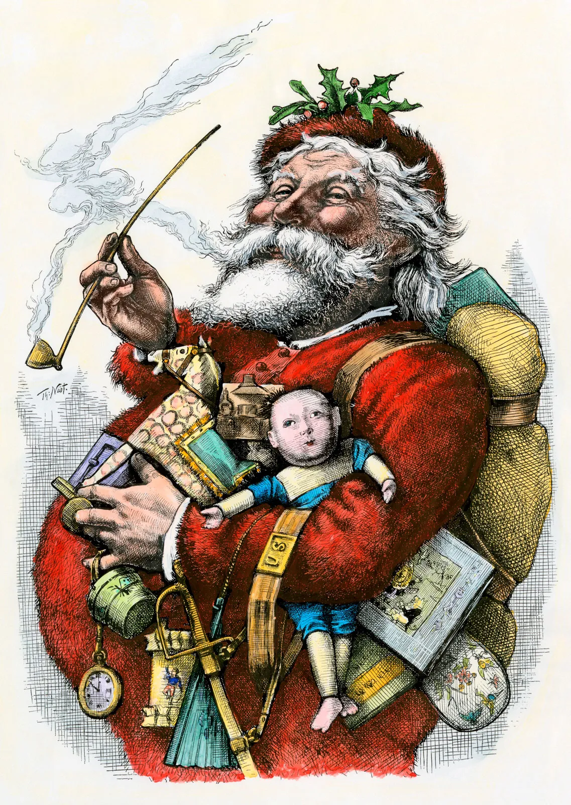

Santa Claus, legendary figure who is the traditional patron of Christmas in the
United States and other countries, bringing gifts to children. His popular image
is based on traditions associated with Saint Nicholas, a 4th-century Christian saint.
Father Christmas fills the role in many European countries.
The Dutch are credited with transporting the legend of Saint Nicholas (Sinterklaas)
to New Amsterdam (now New York City), along with the custom of giving gifts
and sweets to children on his feast day, December 6. The current depiction of Santa
Claus is based on images drawn by cartoonist Thomas Nast for Harper’s Weekly
beginning in 1863. Nast’s Santa owed much to the description given in the poem
“A Visit from St. Nicholas” (also known as “’Twas the Night Before Christmas”),
first published in 1823. The image was further defined by the popular Santa Claus
advertisements created for the Coca-Cola Company from 1931 by illustrator
Haddon Sundblum. Sundblum’s Santa was a portly white-bearded gentleman dressed
in a red suit with a black belt and white fur trim, black boots, and a soft red cap.
